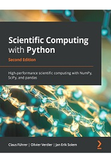

Computational Programming with Python
Lecture 1: First steps - A bit of everything
Center for Mathematical Sciences, Lund University
Lecturer: Robert Klöfkorn (Malin Christersson)
This lecture
- About this course
- About Python
- Data types and variables
- Conditional expressions
- Loops
- Importing modules
- Presentation of teaching assistants
Course Book
Scientific Computing with Python
Claus Führer, Jan Erik Solem, Olivier Verdier (2nd ed.), 2021

Available as eBook in the LU library.
Why Python?
Python is…
Free and open source
It is a scripting language ‐ an interpreted (not compiled) language
It has plenty of libraries among others the scientific ones: linear algebra; visualisation tools; plotting; image analysis; differential equations solving; symbolic computations; statistics; etc.
It’s used everywhere: Scientific computing, scripting, web sites, text parsing, data mining, …
The right tool for the right problem
Python is far from perfect.
But for what we want to do here it is very suitable, because - it is relatively easy to learn - suitable for (smaller) computation in terms of speed - one of the most popular programing languages right now
It provides all that we want to teach in this course and for what you need during your studies at LU.
Why should you take this course very serious?
Many courses in the Math and Physics education include programming projects at all stages of the education. In Physics roughly 30% of the total credits are obtained through solving computational tasks. Most of these tasks involve analyzing experimental data gathered during the labs.
MATB21Project: Develop functions to perform (numerical) integration, optimization, and Taylor expansion of various multivariable functions. Test different visualization methods.MATB22Project: A selection of problems that are to be solved numerically.NUMA41Project: Solve an ODE numerically and other training exercisesNUMB11Several programming projectsFYSB21Simulation: Develop a program (OOP) that simulates how heat dissipates through different materials. Simulate an earth-asteroid impact. This project relies heavily on vectorization.FYSB22Project: Implement functions to solve the time-independent Schrödinger Equation for arbitrary potentials. This requires the use of bisection searches to solve for the boundary conditions.FYSB23Simulation: Develop a program that simulates a non-linear (chaotic) system, investigate the partition of energy (related to the Fermi-Pasta-Ulam-Tsingou problem). This requires careful thought about time complexity.FYSB23Project: Use two different computational models (self-avoiding random walk and Monte Carlo simulation) to investigate statistical properties related to protein folding.FYSB24Project: Perform very detailed spectroscopic analysis using several different methods (using Python).
And many more…
Premisses
We work with Python version ≥ 3.x
We use an
IPythonshellWe use the work environment
Spyder(feel free to use any other IDE of your choice)We work (later) with the IPython notebook
We start our programs with
Examples
Python may be used in interactive mode
(executed in an IPython shell)
Note:
In [2] is the prompt in IPython shell. It counts the statements. In the more basic Python shell the prompt string is >>>
IPython
IPython is an enhanced Python interpreter.
Use the arrow keys to visit previous commands.
Use the
TABkey to auto-complete.To get help on an object just type
?after it and then return.
Examples: Linear Algebra
Let us solve
\[\begin{pmatrix}1 &2\\3 &4\end{pmatrix} \cdot x = \begin{pmatrix}2\\1\end{pmatrix}\]
Note: A line can be continued on the next line without any continuation symbol as long as parentheses or brackets are not closed.
More examples
Computing \(e^{i\pi}\) and \(2^{100}\):
Note: Everything following # is treated as a comment
Data types and variables
Numerical data types
In Python we call a number
- \(i \in \mathbb{Z}\) an integer (
int), and - \(x \in \mathbb{R}\) a real number (
float) and, - \(z \in \mathbb{C}\) a complex number (
complex).
Arithmetic operators
+ - * / (addition, subtraction, multiplication, division)
** (exponentiation or power)
% (modulus operator, yields remainder)
// (floor division, yields quotient)
Variables
A variable is a reference to an object. One uses the assignment operator = to assign a value to a variable.
For complex numbers, jis a suffix to the imaginary part. The code 5+j will not work.
Strings
Strings are lists of characters enclosed by single or double quotes.
str1 = '"Eureka" he shouted.'
str2 = "He had found what is now known as Archimedes' principle."
Multiple lines
You may also use triple quotes for strings including multiple lines:
Conditional expressions
Book p. 20, 22, 37
Definition
A conditional expression is an expression that may have the Boolean value True or False.
Comparison operators
Comparison operators act on numerical operands and yield a Boolean value (True or False).
== (equal to)
!= (not equal to)
< (less than)
> (greater than)
<= (less than or equal to)
>= (greater than or equal to)
Boolean variables
We can assign Boolean values to variables in different ways.
Boolean operators
Boolean operators (and, or, not) act on Boolean operands and yield a Boolean value.
Arithmetic operators (again)
+ - * / (addition, subtraction, multiplication, division)
** (exponentiation)
% (modulus operator, yields remainder)
// (floor division, yields quotient)
Conditional expressions examples
The priority of Boolean operators can be compared with arithmetic operators, addition ( → or), multiplication ( → and), and sign change (→ not).
Conditional statements
if statement
A conditional statememt delimits a block that will be executed if the condition is True. An optional block, started with the keyword else will be executed if the condition is False.
Example
\[ |x| = \begin{cases} \phantom{-} x & \text{ if } x \ge 0 \\ -x & \text{ else} \end{cases} \]

One branch
Two branches
Several branches
Error messages
By using Boolean expressions you can check for potential errors:
Loops
You can iterate in Python by using
a while loop
or a for loop
while loops
Example: Find \[ \sum_{i = 0}^{10} {1}\]
What will happen if you forget to write the last row of the while loop?
Another example
Note ‐ Infinite loops
# Careful with the condition statement here!
while True:
# repeat task until forever
print("Hello")Repeating a task
One typical use of the for loop is to repeat a certain task a fixed number of times:
for loops
Example: Find \[ \sum_{i = 0}^{10} {1}\]
Indentation
The part to be repeated in the for loop has to be properly indented.
for elt in my_list:
do_something()
something_else()
etc
print("loop finished") # outside of the for loopIn contrast to other programming languages, the indentation in Python is mandatory.
Many other kinds of Python structures also have to be indented and this will be covered when introduced.
The range function
You can use:
range(stop) a sequence of integers ≥ 0 and < stop
range(start, stop) a sequence of integers ≥ start and < stop
range(start, stop, step) a sequence of integers that starts with start and then increases by step as long as the number is < stop.
Example: Show all non-negative multiples of 15 that are less than 100.
Importing modules
Importing Numpy
In order to use standard mathematical functions in Python, you must import some module. We will use numpy exclusively.
You can import numpy and then use dot-notation after the name numpy:
You can import numpy and give it a shorter name:
More about imports
You can choose what you want to import to avoid dot-notation:
You can make a star import to import everything from a module:
Configuration of Spyder
Find the Preferences:
Tools - Preferences (Windows/Linux)
Python - Preferences (Mac)
Choose Editor and the tab Advanced settings, then click Edit template for new modules. A file with the name template.py will be opened where you can enter the code for imports that will be included in all new files.
See instructions on Canvas for more information.
How to run a piece of code
There are two phases in Python programming: 1. Writing the code 2. Executing (running) it For Task 2, one needs to give the code to the Python interpreter which reads the code and figures out what to do with it.
Short snippets of code can be written directly in the interpreter and executed interactively. We use the interpreter IPython which has extra features.
For writing a larger program, one generally uses a text editor which can highlight code in a good way.
There are also development suites which bundle the interpreter, editor and other things into the same program.